Entenda como funciona o processo de build e publicação de novos apps mobile multi-tenant.
Sobre este guia
Este guia descreve o processo completo para criar e publicar um novo app nas lojas (App Store e Google Play) a partir do repositório interno react-native-app.
A plataforma é multi-tenant: o mesmo código gera apps diferentes para cada cliente, diferenciados pelo bundle ID e pelo nome do app. Cada tenant gera um app independente nas lojas — com ícone, nome e pacote próprios.
ℹ️
O bundle ID de cada tenant segue o padrão com.plataformaexemplo.slug-do-tenant. O slug é definido no momento de criar o tenant.
Fluxo geral
O processo é dividido em três fases:
1. Pré-build — configuração de ambiente antes de gerar os binários:
Adição dos assets do tenant (ícone, splash)
Build iOS local com eas build --platform ios (interativo, uma vez por tenant)
Configuração do Firebase Android (google-services.json)
Disparo do workflow Android no GitHub Actions
2. Pós-build — configuração de push notifications após os builds estarem prontos:
Criação do aplicativo de plataforma iOS no Amazon SNS (APNs)
Criação do aplicativo de plataforma Android no Amazon SNS (FCM)
Registro dos ARNs no GI da plataforma
3. Publicação — envio dos apps para as lojas:
Publicação na App Store Connect
Publicação no Google Play Console
O que o workflow faz
O workflow Android executa automaticamente:
Faz bump da versão do app (patch, minor ou major)
Commita e faz push da nova versão no repositório
Define as variáveis do tenant no EAS (nome e slug)
Inicia o build Android no EAS (assíncrono)
ℹ️
O build iOS é feito localmente antes de disparar o workflow — consulte a seção Configuração iOS.
✅
O build Android roda no EAS em background. Acompanhe no painel de builds do projeto no expo.dev após disparar o workflow.
Setup
Pré-requisitos
O que precisa estar configurado antes de criar o primeiro tenant.
Transparente — o fundo é definido pelo tema do app
PNG
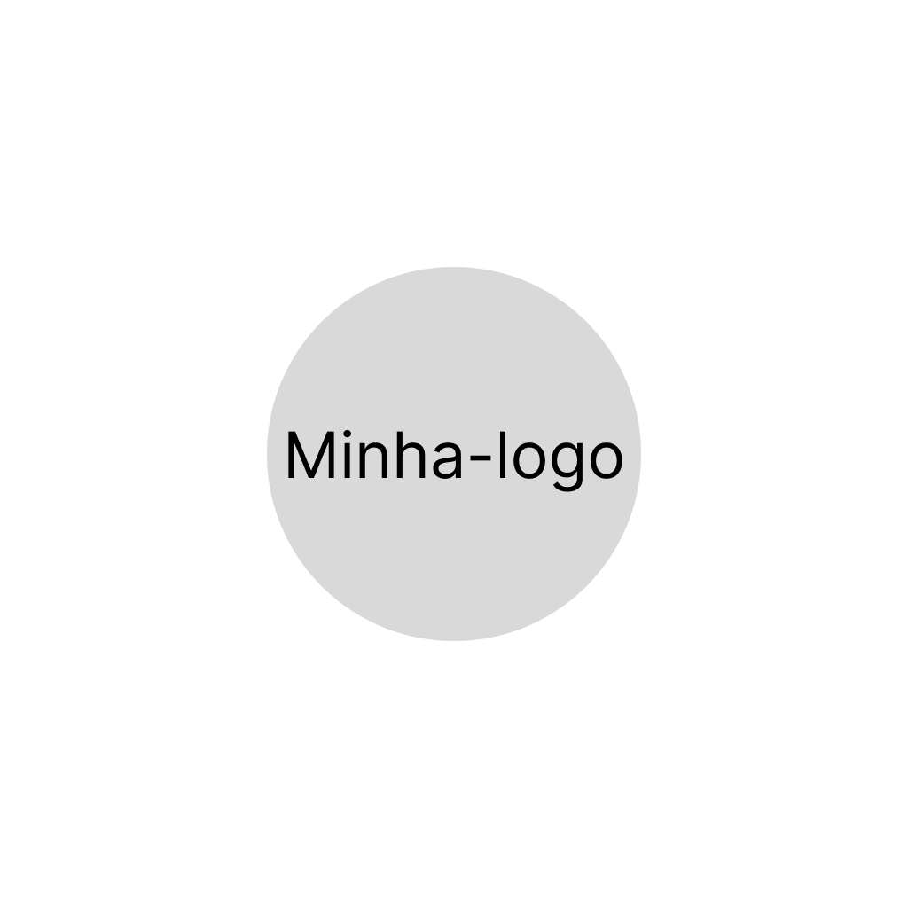
adaptive-icon.png
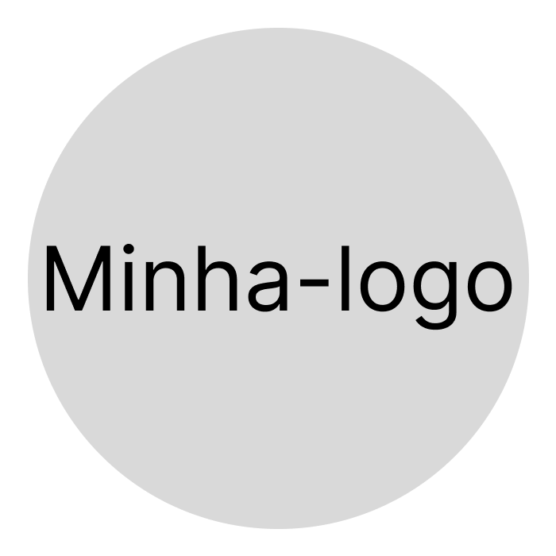
logo.png
ℹ️
O adaptive-icon.png deve ter fundo transparente. O Android aplica a cor de fundo do app por baixo — a imagem deve conter apenas o foreground (logo/ícone).
⚠️
Sempre rode o app localmente antes de publicar. Verifique se o ícone e a splash screen estão com proporções corretas e bem centralizados — tanto no Android quanto no iOS. Problemas de alinhamento ou corte só ficam visíveis rodando o app de verdade.
Consulte a pasta de algum tenant já existente em assets/images/tenants/ como referência de estrutura e nomes de arquivo.
Novo Tenant
Configuração iOS
O build iOS é feito localmente — rode o comando abaixo antes de disparar o workflow Android.
Slug do tenant
Digite o slug para preencher automaticamente os bundle IDs e comandos desta página.
com.plataformaexemplo.
Por que é local
Cada tenant gera um app com bundle ID próprio — por exemplo, com.plataformaexemplo.minha-empresa. A Apple exige um Provisioning Profile exclusivo por bundle ID, e o EAS só consegue criá-lo no primeiro build em modo interativo.
Por isso o build iOS é feito localmente uma vez por tenant. Builds futuros do iOS também precisam ser feitos localmente — não há workflow automático para iOS.
ℹ️
O Distribution Certificate é compartilhado entre todos os tenants da mesma conta Apple. Apenas o Provisioning Profile é criado por tenant.
Passo a passo
⚠️
Durante o processo, o EAS solicitará login com a conta Apple Developer. Use a mesma conta configurada nos pré-requisitos.
1
Clone o repositório e instale as dependências
git clone <URL_DO_REPOSITÓRIO>
cd react-native-app
yarn install
2
Crie o perfil no eas.json e rode o build
Adicione o perfil do tenant ao objeto "build" do eas.json e commite antes de buildar:
eas build --platform ios --profile production-slug-do-tenant
💡
O EAS solicitará credenciais interativamente na primeira vez — confirme a criação do Provisioning Profile quando perguntado.
⚠️
Se o EAS perguntar se deseja recusar o Distribution Certificate existente, não recuse — ele é compartilhado entre todos os tenants. Apenas o Provisioning Profile deve ser gerado novo.
3
Aguarde o build e submeta para a App Store
O build roda no EAS. Acompanhe no painel de builds do projeto em expo.dev → Builds. Ao concluir, configure as credenciais do tenant e submeta.
Primeiro, vincule a API Key ao tenant correto:
eas credentials --platform ios --profile production-slug-do-tenant
No menu, selecione App Store Connect: Manage your API Key → Use an existing API Key for EAS Submit → selecione a key mais recente.
Em seguida, rode o submit:
eas submit --platform ios --profile production-slug-do-tenant
O EAS exibirá um menu de opções — selecione Select a build from EAS e depois escolha o build mais recente da lista.
4
Prossiga para a Configuração Android
Com o build iOS em andamento, configure o Firebase e dispare o workflow Android. Consulte a seção Configuração Android.
Novo Tenant
Configuração Android
Setup único necessário antes do primeiro build Android de cada novo tenant.
Slug do tenant
Digite o slug para preencher automaticamente os bundle IDs e comandos desta página.
com.plataformaexemplo.
Por que é necessário
O arquivo google-services.json lista os package names autorizados no Firebase. Cada tenant possui um package name único — por exemplo, com.plataformaexemplo.minha-empresa.
Se o package name do novo tenant não estiver no arquivo, o build falhará com o erro:
No matching client found for package name 'com.plataformaexemplo.slug-do-tenant'
in /home/expo/workingdir/build/android/app/google-services.json
Registrar no Firebase
1
Acesse o Firebase Console
Entre no Firebase Console e selecione o projeto interno de notificações.
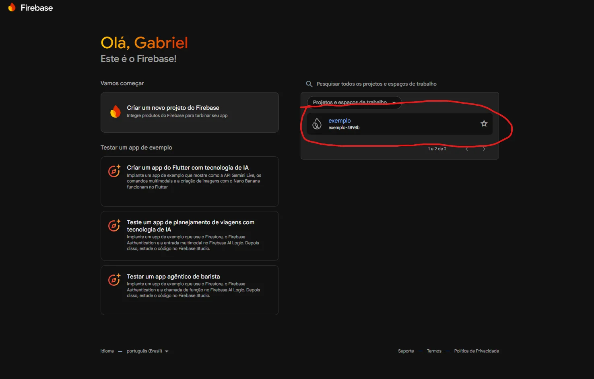
2
Clique em "+ Adicionar app"
Na visão geral do projeto, clique no botão + Adicionar app.
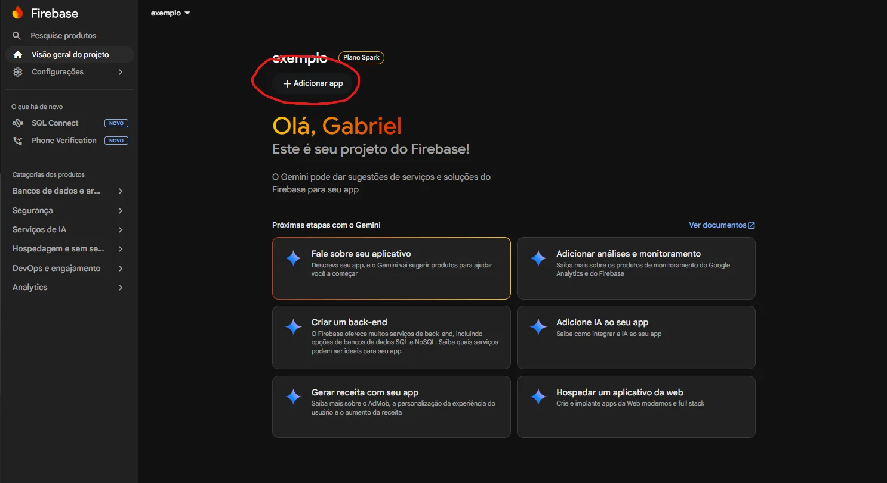
3
Selecione a plataforma Android
Nas opções de plataforma exibidas, clique no ícone Android.
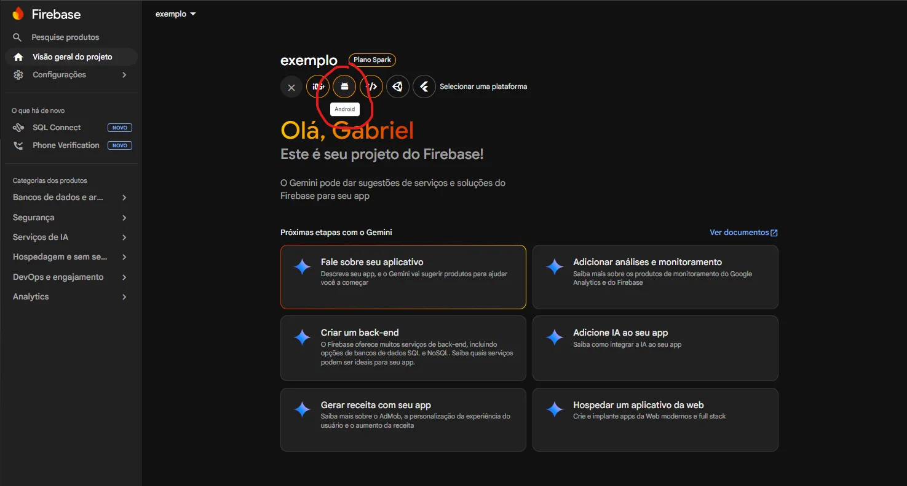
4
Informe o Package name
No campo Nome do pacote do Android, informe o slug do tenant — o prefixo é sempre fixo:
com.plataformaexemplo.
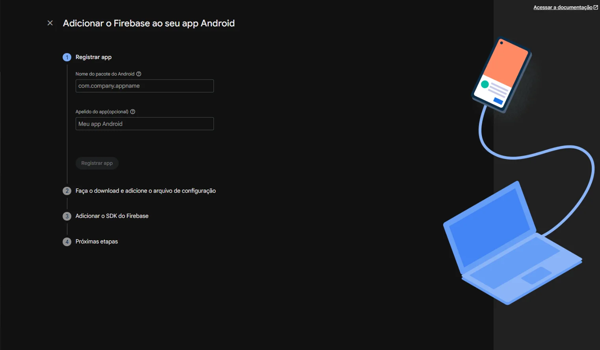
Baixar google-services.json
Após registrar o app no Firebase, baixe o arquivo google-services.json atualizado e substitua o existente na raiz do projeto.
5
Baixe o google-services.json
No Firebase Console, após adicionar o app Android, clique em Baixar google-services.json. O arquivo já conterá todos os apps Android registrados no projeto.
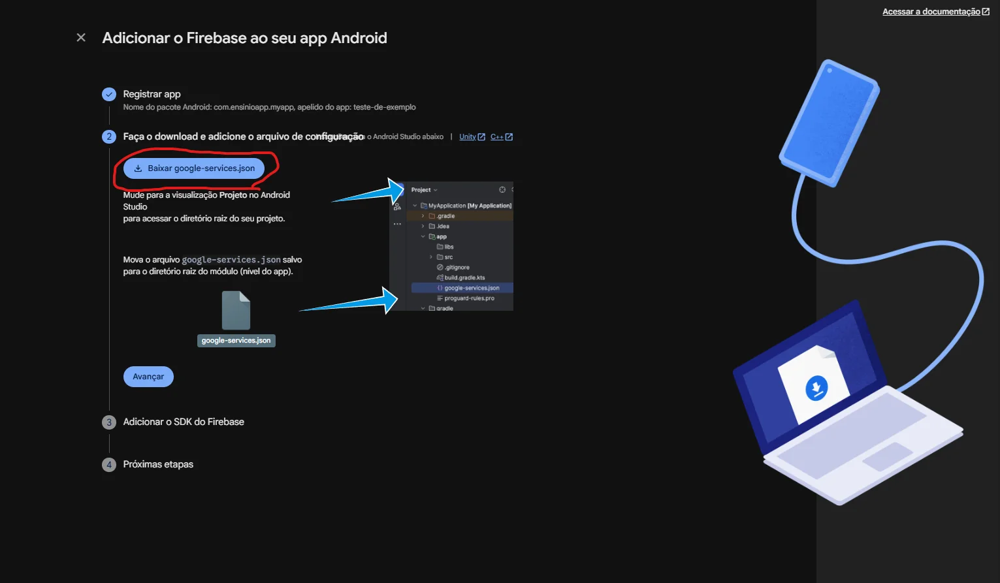
💡
Após baixar o arquivo, clique em Avançar nos passos seguintes e depois em Voltar ao console — não é necessário seguir as instruções de integração do SDK.
6
Substitua o arquivo no repositório
Copie o arquivo baixado para a raiz do projeto, substituindo o google-services.json existente. Commite e faça push. Em seguida, prossiga para a seção Executar o Workflow.
⚠️
Sempre baixe o arquivo diretamente do Firebase após registrar um novo tenant. Não edite o JSON manualmente.
CI/CD
Executar o Workflow
Como disparar o build Android de um tenant pelo GitHub Actions. O build iOS é feito separadamente — veja Configuração iOS.
Acessar o GitHub Actions
1
Abra o repositório no GitHub
Acesse o repositório interno no GitHub e clique na aba Actions.
2
Selecione o workflow
Na lista à esquerda, clique em Start android build in EAS.
3
Clique em "Run workflow"
Um formulário aparecerá para preencher os parâmetros do build. Preencha e confirme.
Parâmetros
Campo
Descrição
Exemplo
tenant_name
Nome de exibição do app nas lojas
Minha Empresa
expo_public_tenant
Slug do tenant — define o bundle ID e as configurações carregadas. Deve ser idêntico ao usado no setup iOS e Firebase
minha-empresa
bump_type
Tipo de bump de versão. Use patch para builds de rotina
patch
bundle_id
Prefixo do bundle ID. Para apps com o padrão atual, use com.plataformaexemplo. Para apps antigos com bundle ID customizado, informe o prefixo correto — o slug do tenant é adicionado automaticamente pelo workflow
com.plataformaexemplo
💡
O expo_public_tenant deve ser exatamente o mesmo slug usado no setup iOS e no registro do Firebase.
Monitorar o build
O build roda de forma assíncrona no EAS. Para acompanhar:
Acesse o painel de builds do projeto em expo.dev → Builds
O build aparecerá com status In progress
Ao concluir, o artefato .aab fica disponível para download
💡
Com o build concluído, configure as notificações push antes de publicar nas lojas — veja Configuração SNS iOS e SNS Android.
Publicação
Publicar na App Store
Como preencher os campos da App Store Connect e submeter o app para revisão.
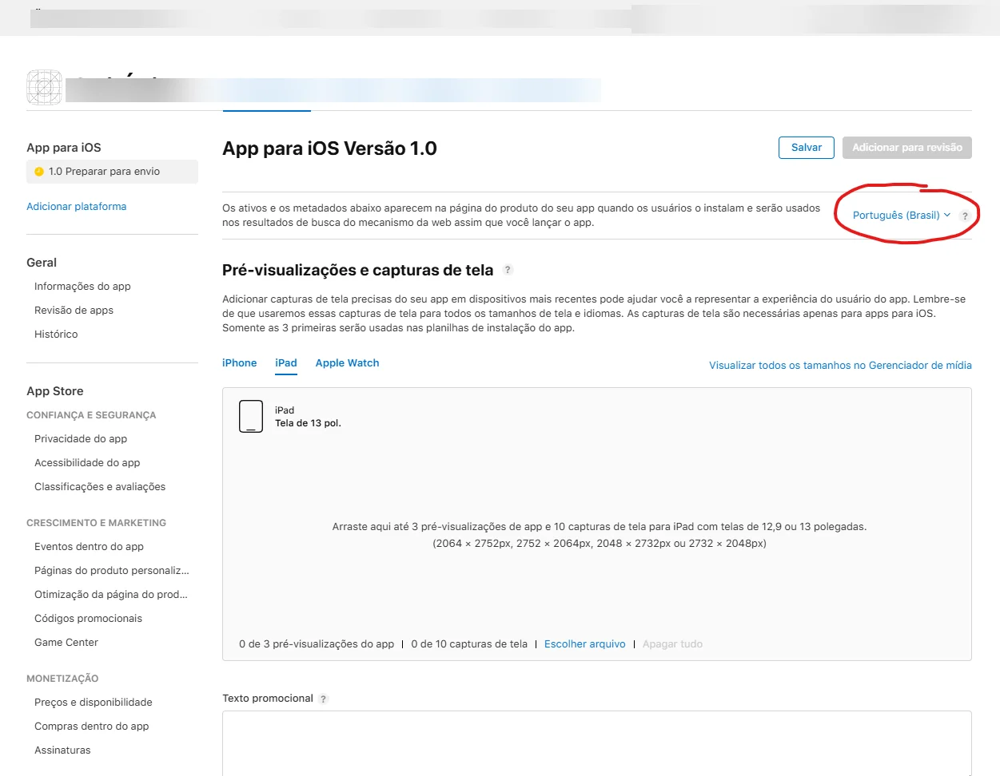
⚠️
Todos os metadados (capturas de tela, descrição, texto promocional) são vinculados ao idioma selecionado. Se o app tiver outros idiomas configurados, cada um deve ter seus próprios metadados preenchidos — caso contrário, ao clicar em Adicionar para revisão aparecerá um erro indicando os campos obrigatórios em falta por idioma:
No menu lateral, clique em Informações gerais. No campo Idioma principal, selecione Português (Brasil). No campo Categoria, selecione a categoria de acordo com o propósito do tenant.
💡
A categoria principal determina como o app aparece nas buscas e prateleiras da App Store. Escolha a que melhor descreve o produto do tenant.
3
Configure os Direitos de conteúdo
Ainda em Informações gerais, localize a seção Direitos de conteúdo e clique para editar. Selecione Não, este app não contém, exibe ou acessa conteúdo de terceiros e clique em Concluído.
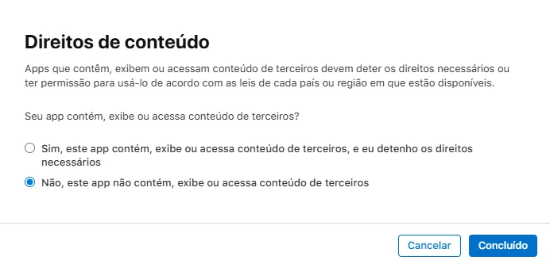
4
Salve as Informações gerais
Após configurar os direitos de conteúdo, clique em Salvar no canto superior direito da página Informações do app.
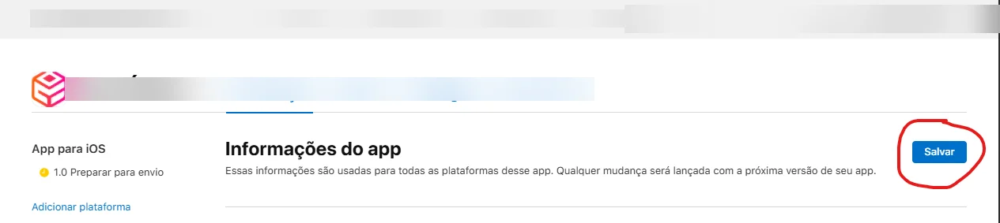
Classificações Etárias
No menu lateral, clique em Classificações etárias e preencha os 7 passos conforme abaixo.
1
Recursos
Item
Valor
Controles Parentais
NÃO
Restrição por idade
NÃO
Acesso irrestrito à web
NÃO
Conteúdo gerado por usuários
NÃO
Mensagens e chat
NÃO
Publicidade
NÃO
2
Temas adultos
Item
Valor
Linguagem obscena ou humor grosseiro
NENHUM
Temas de terror/medo
NENHUM
Uso ou referências a álcool, tabaco ou drogas
NENHUM
3
Médico ou bem-estar
Item
Valor
Informações médicas ou sobre tratamentos
NENHUM
Tópicos de saúde ou bem-estar
NÃO
4
Sexualidade ou nudez
Item
Valor
Temas adultos ou sugestivos
NENHUM
Conteúdo sexual ou nudez
NENHUM
Conteúdo com imagens sexuais e nudez
NENHUM
5
Violência
Item
Valor
Violência animada ou fantasiosa
NENHUM
Violência realista
NENHUM
Violência realista sádica ou prolongada
NENHUM
Armas de fogo ou outras armas
NENHUM
6
Atividades baseadas em acaso
Item
Valor
Simulação de jogos de azar
NENHUM
Competições
NENHUM
Jogos de azar
NÃO
Caixas de itens
NÃO
7
Informações adicionais
Campo
Valor
Classificação indicativa e substituição
Não aplicável
URL de adequação à idade
(deixar vazio)
Clique em Salvar. A classificação calculada resultante é +4.
Privacidade do App
1
Acesse Privacidade do app
No menu lateral, clique em Privacidade do app e depois em Começar.
2
Coleta de dados
Na tela Coleta de dados, selecione Não, nós não coletamos dados deste app e clique em Salvar.
3
Política de privacidade
Na seção Política de privacidade, clique em Editar e preencha os campos:
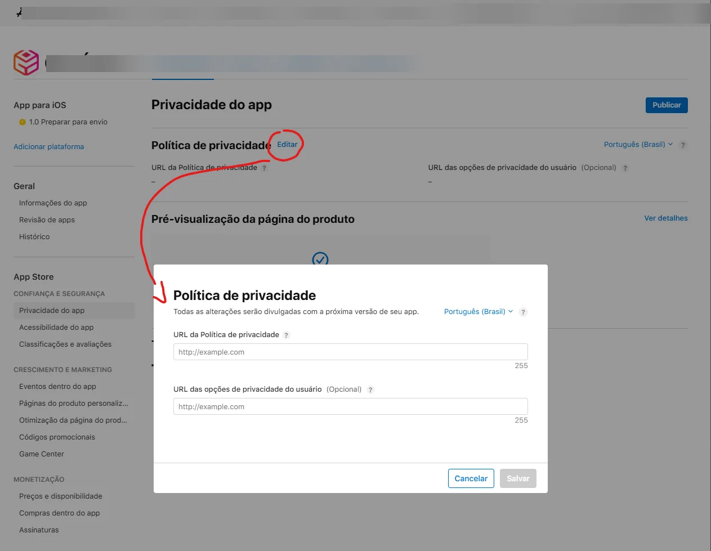
Campo
Valor
URL da Política de privacidade
URL da política de privacidade do tenant (máx. 255 caracteres)
URL das opções de privacidade do usuário
Opcional
Clique em Salvar.
4
Publique as configurações de privacidade
Após salvar todas as configurações, clique em Publicar no canto superior direito da página Privacidade do app.
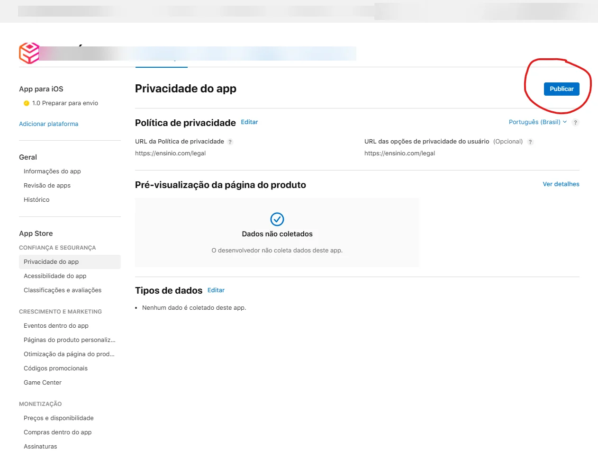
Preços e Disponibilidade
1
Acesse Preços e disponibilidade
No menu lateral, em Monetização, clique em Preços e disponibilidade.
2
Configure a Tabela de preços
Na seção Tabela de preços, clique em Adicionar preços. No modal Preço do app, configure:
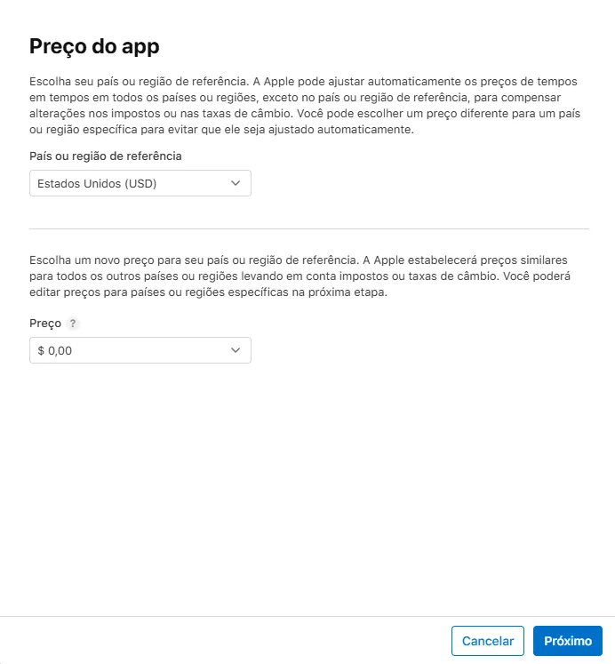
Campo
Valor
País ou região de referência
Estados Unidos (USD)
Preço
$ 0,00 (gratuito)
Clique em Próximo.
3
Preços nos países ou regiões
A Apple preencherá automaticamente o preço gratuito para todos os 174 países com base na referência. Não é necessário alterar nada — clique em Próximo.
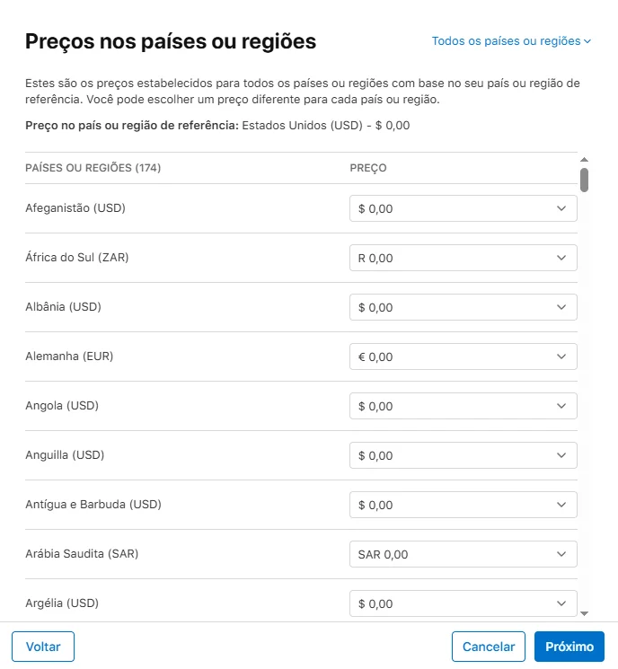
4
Confirme o preço do app
Revise o resumo com os 175 países e clique em Confirmar.
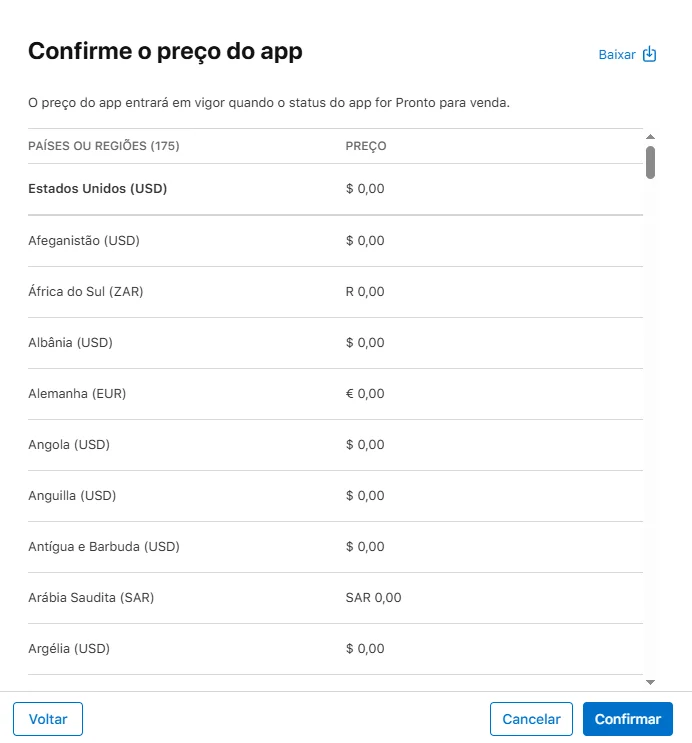
5
Configure a disponibilidade
Na seção Disponibilidade do app, clique em Configurar disponibilidade.
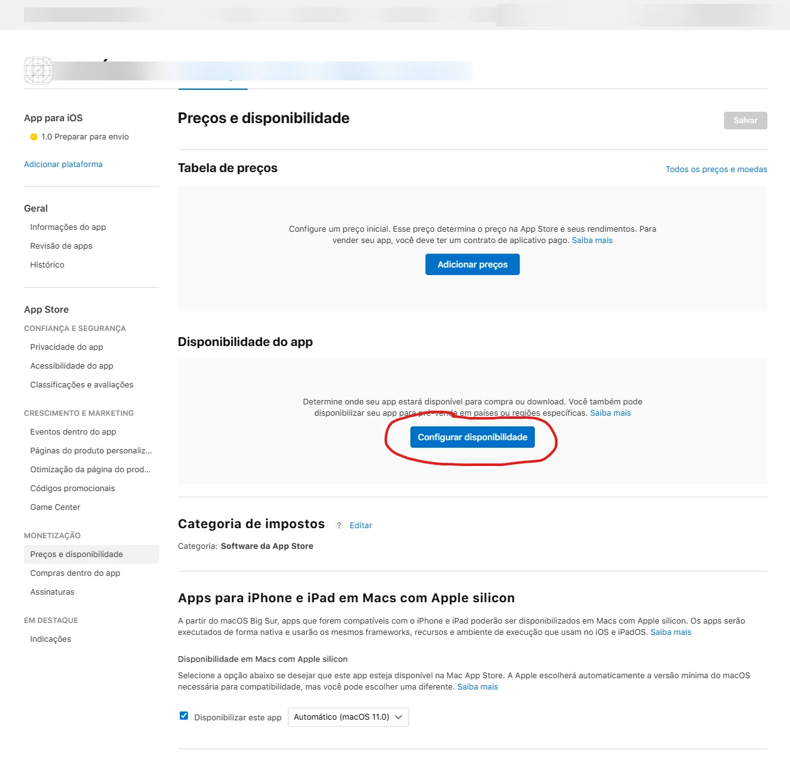
6
Selecione Todos os países ou regiões
Mantenha selecionado Todos os países ou regiões e clique em Próximo.
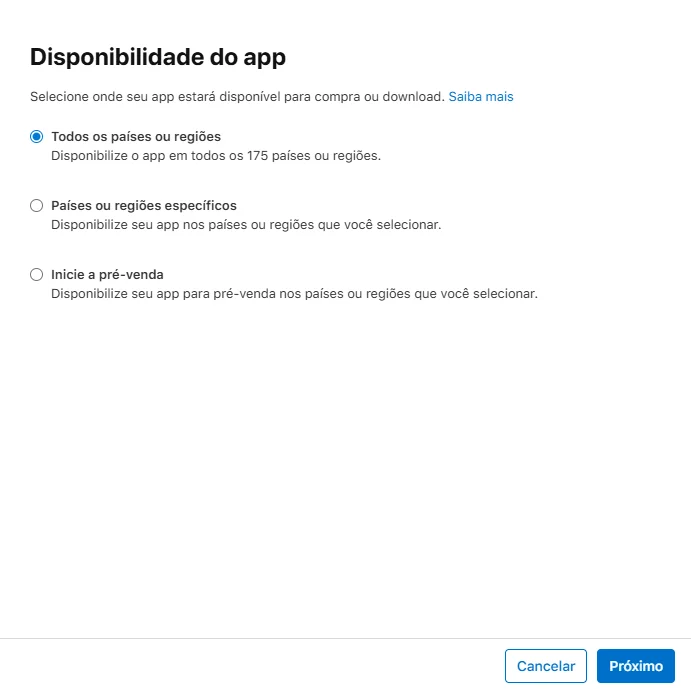
7
Confirme
Na tela de confirmação, clique em Confirmar.
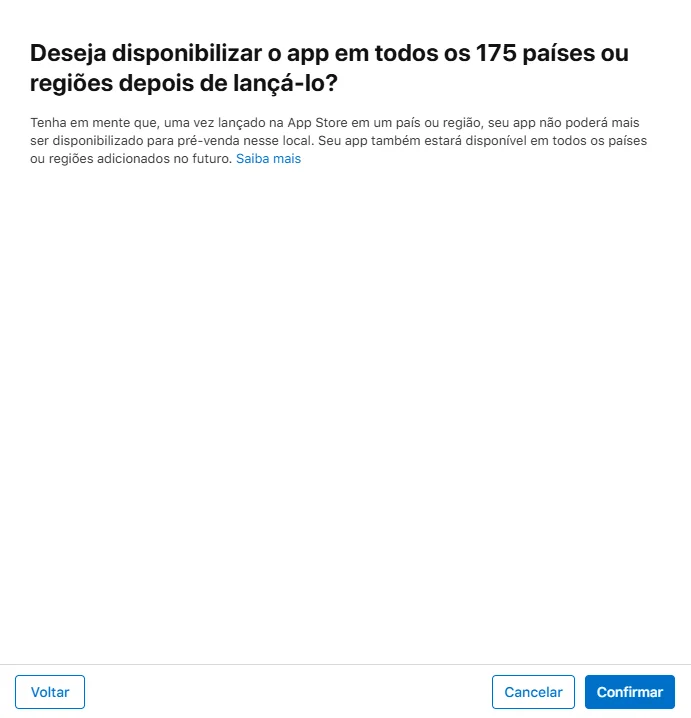
Capturas de Tela
Na página App para iOS Versão 1.0, preencha a seção Pré-visualizações e capturas de tela para iPhone e iPad com as imagens fornecidas pelo time de UX/UI no Figma.
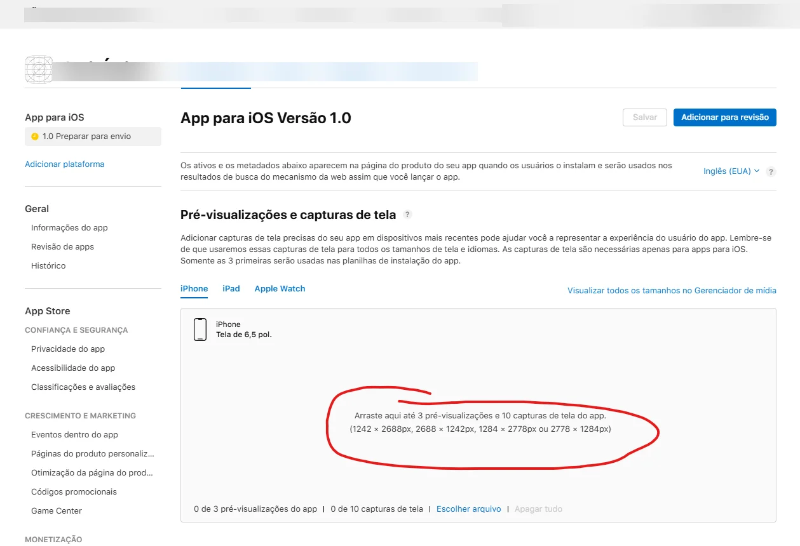
ℹ️
As imagens são preparadas pelo time de UX/UI no Figma. Solicite os arquivos exportados antes de iniciar este passo.
Dispositivo
Tamanhos aceitos
Limite
iPhone (6,5 pol.)
1242×2688, 2688×1242, 1284×2778, 2778×1284
3 pré-visualizações + 10 capturas
iPad (12,9 ou 13 pol.)
2064×2752, 2752×2064, 2048×2732, 2732×2048
3 pré-visualizações + 10 capturas
⚠️
As capturas da aba iPhone são usadas para todos os tamanhos de tela e idiomas. Preencha também a aba iPad separadamente.
Metadados do App
Ainda na página App para iOS Versão 1.0, preencha os campos de metadados abaixo das capturas de tela.
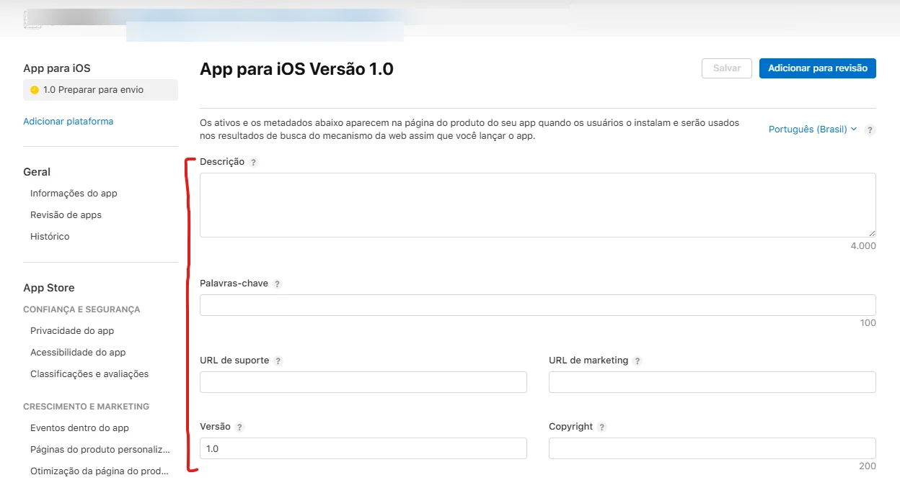
Campo
Valor
Descrição
Descrição do app do tenant (máx. 4.000 caracteres)
Palavras-chave
Palavras-chave do tenant (máx. 100 caracteres, separadas por vírgula)
URL de suporte
URL de suporte do tenant
URL de marketing
URL de marketing do tenant
Versão
1.0
Copyright
Nome da organização
Compilação
Na seção Compilação, clique em Adicionar compilação e selecione o único build disponível na lista. Clique em Concluído.
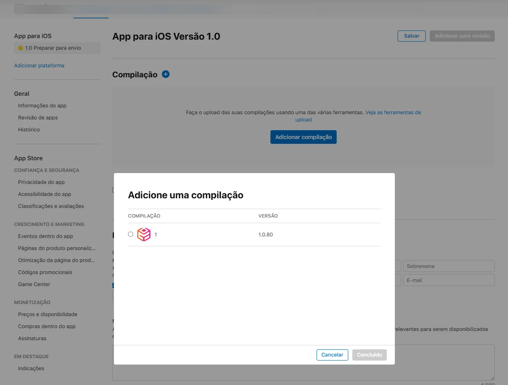
💡
O build foi enviado automaticamente pelo EAS durante o eas submit. Se a lista estiver vazia, aguarde alguns minutos e recarregue a página.
Informações de Revisão
Na seção Informações para a equipe de revisão dos apps, forneça as credenciais e o contato do tenant para que o revisor da Apple consiga fazer login e testar o app.
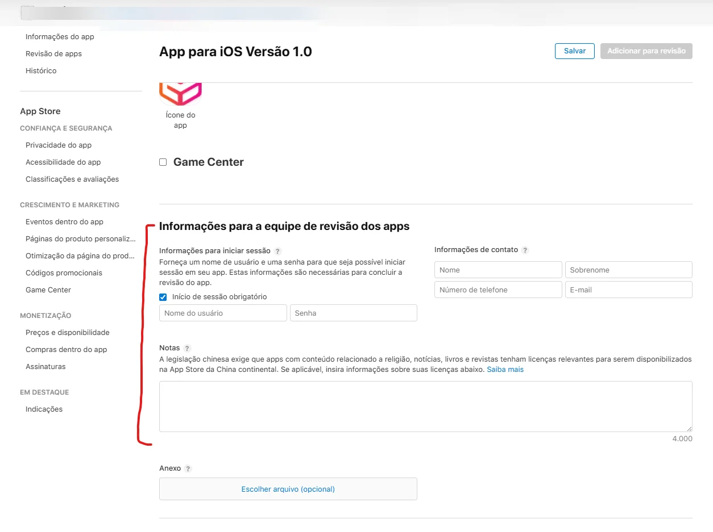
Campo
Valor
Início de sessão obrigatório
Marcado
Nome do usuário
E-mail de um usuário de teste do tenant
Senha
Senha do usuário de teste do tenant
Nome / Sobrenome
Nome do contato do tenant
Número de telefone
Telefone do contato do tenant
E-mail
E-mail do contato do tenant
Notas
Instruções adicionais do tenant para o revisor (opcional)
Enviar para Revisão
Com todas as configurações preenchidas e salvas, clique em Adicionar para revisão no canto superior direito da página App para iOS Versão 1.0.
ℹ️
O tempo de revisão da Apple costuma levar entre 24 e 48 horas. Acompanhe o status em App Store Connect → Apps.
Pós-publicação
Pós-publicação iOS
Passos a realizar após o app iOS ser aprovado na App Store.
Registrar App ID no eas.json
O ascAppId é o ID do Apple gerado pela App Store Connect ao criar o app. Ele é necessário para que o eas submit saiba para qual app enviar o build nas próximas atualizações.
1
Localize o ID do Apple no App Store Connect
Acesse appstoreconnect.apple.com → Apps, abra o app do tenant e clique em Informações do app no menu lateral. Role até a seção Informações gerais e copie o valor do campo ID do Apple (número com ~10 dígitos, ex: 123456789).
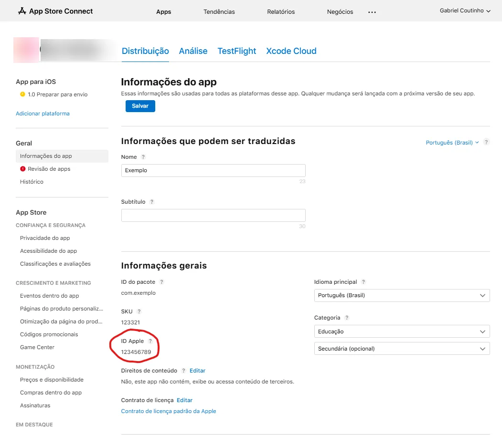
2
Adicione o ascAppId no eas.json
No objeto "submit" do eas.json, adicione o campo ascAppId ao perfil do tenant:
Com o ascAppId preenchido, o comando eas submit nas próximas atualizações não precisará de confirmação manual do app de destino.
Publicação
Publicar no Google Play
Como enviar o .aab gerado pelo workflow para o Google Play Console.
Criando aplicativo
1
Acesse a lista de apps da organização
Entre no Google Play Console, selecione a conta da organização e clique em Criar app.
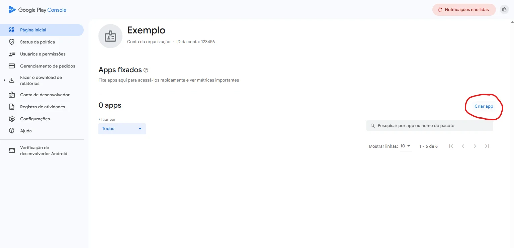
2
Preencha os detalhes do app
No formulário Criar app, preencha os campos conforme abaixo:
Campo
Valor
Nome do app
Nome de exibição do tenant (ex: Minha Empresa)
Nome do pacote
com.plataformaexemplo.
Idioma padrão
Português (Brasil) – pt-BR
App ou jogo
App
Gratuito ou pago
Grátis
⚠️
O Nome do pacote é permanente e não pode ser alterado após a criação. Verifique o slug antes de confirmar.
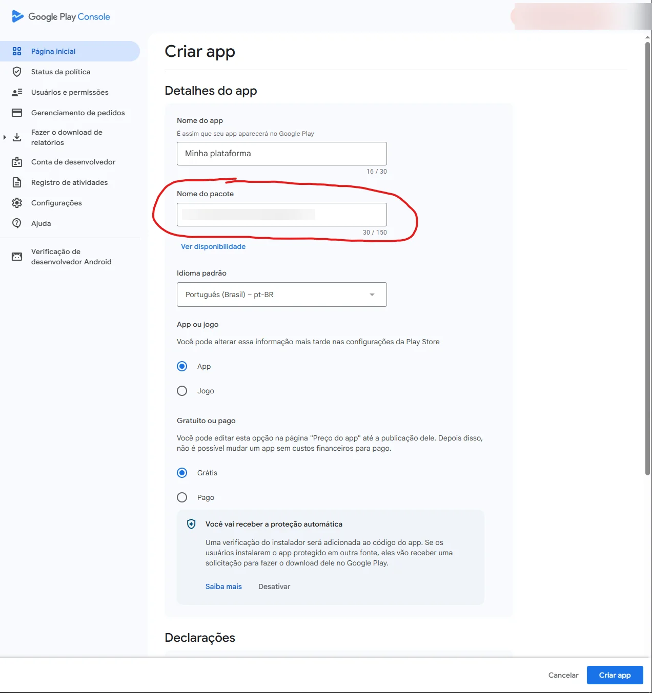
3
Aceite as declarações e crie o app
Role até a seção Declarações, marque as caixas de conformidade com as políticas do Google Play e clique em Criar app.
Configurando políticas
4
Acesse Definir Política de Privacidade
No painel do app, na seção Configurar o app → Informar nossa equipe sobre o conteúdo do app, clique em Definir Política de Privacidade.
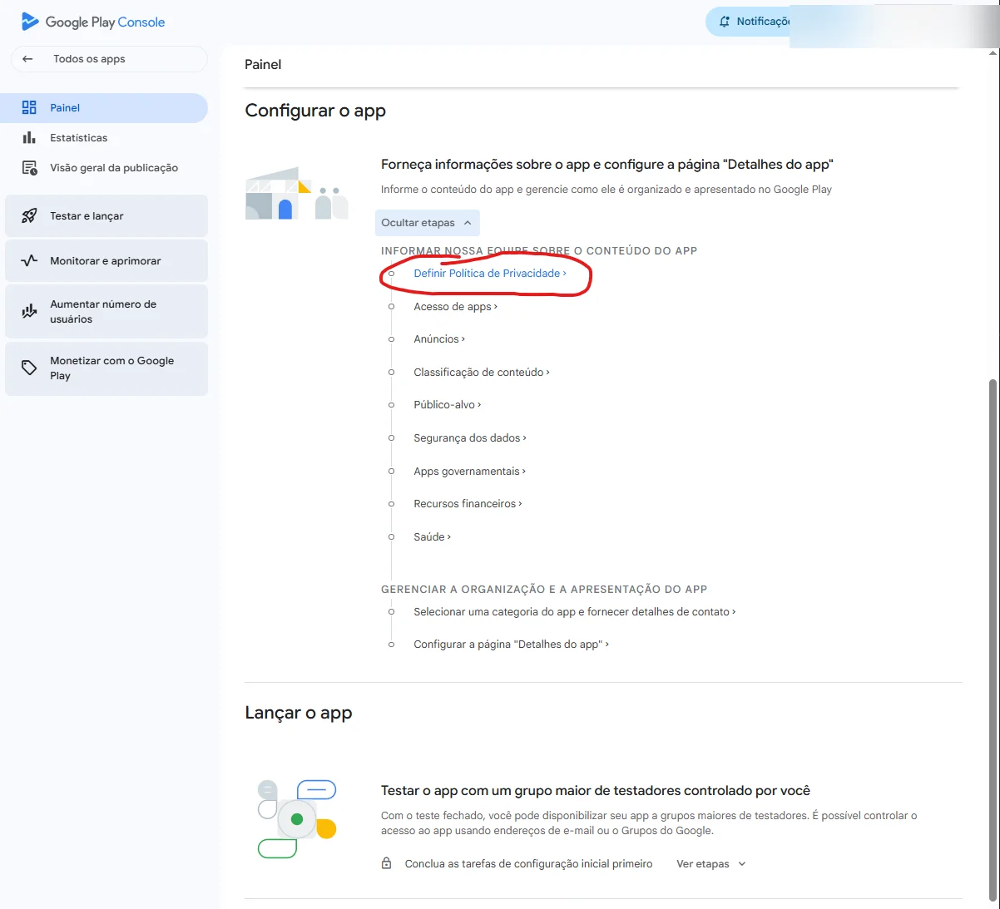
5
Insira a URL da política e salve
No campo de URL, insira https://plataforma-exemplo.com/legal e clique em Salvar.
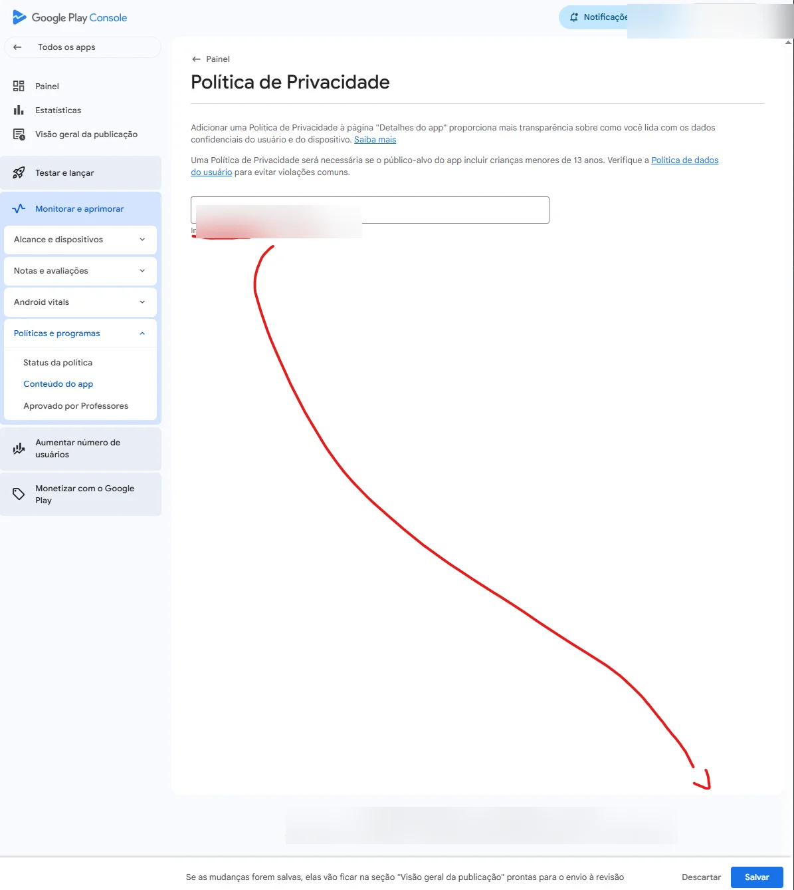
6
Acesse Conteúdo do app e inicie as declarações
No menu lateral, em Monitorar e aprimorar → Políticas e programas → Conteúdo do app, clique em Iniciar declaração em cada uma das seções listadas na aba Precisam de atenção.
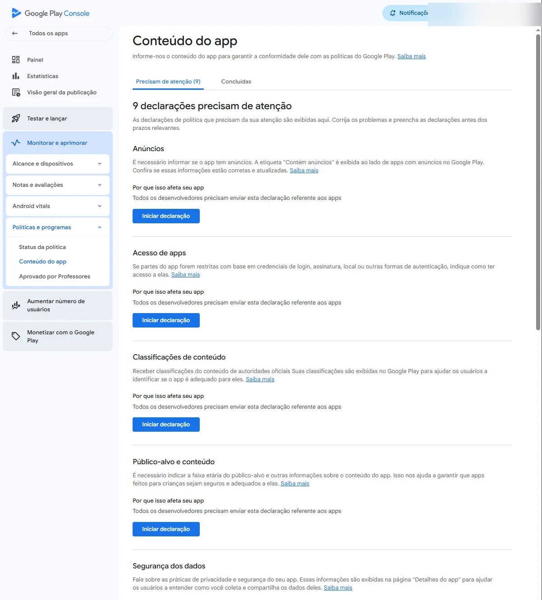
7
Anúncios
Campo
Valor
Anúncios
Não, meu app não tem anúncios
Clique em Salvar.
8
Acesso de apps
Selecione Todas ou algumas funcionalidades do app são restritas e clique em + Adicionar instruções.
ℹ️
Antes de preencher, crie um usuário de teste na plataforma do tenant e use as credenciais dele aqui — o Google Play precisará delas para o revisor fazer login no app durante a avaliação.
Campo
Valor
Nome da instrução
Login do App
Nome de usuário
E-mail do usuário de teste do tenant
Senha
Senha do usuário de teste do tenant
Marque Nenhuma outra informação é necessária para acessar meu app. Marque também Permitir que o Android use as credenciais enviadas para testes de desempenho e compatibilidade do app. Clique em Salvar.
9
Classificações de conteúdo
Passo 1 — Categoria:
Campo
Valor
Endereço de e-mail
E-mail do responsável pelo app
Categoria
Todos os Outros Tipos de Aplicações
Termos e Condições
Marcar
Passo 2 — Questionário: selecione Não em todos os itens:
Item
Valor
Aplicação transferida
Não
Partilha de Conteúdos dos Utilizadores
Não
Conteúdo Online
Não
Promoção ou Venda de Produtos com Restrições de Idade
Não
Diversos — Partilha de localização física
Não
Diversos — Compra de artigos digitais
Não
Diversos — Recompensas em criptomoedas/NFTs
Não
Diversos — Browser ou motor de busca
Não
Diversos — Notícia ou produto educativo
Não
Clique em Salvar no Passo 3 (Resumo).
10
Público-alvo e conteúdo
Passo 1 — Idade do público-alvo: marque todas as faixas etárias.
Faixa etária
Valor
Menores de 5 anos
Marcado
6 a 8
Marcado
9 a 12
Marcado
13 a 15
Marcado
16 a 17
Marcado
Maiores de 18 anos
Marcado
Passo 2 — Detalhes do app: marque Confirmo que este app obedece a toda a legislação e regulamentação aplicáveis de proteção infantil.
Passo 3 — Anúncios: selecione Não, meu app não tem anúncios.
Passo 4 — Presença na loja: selecione Não incluir meu app no Programa Aprovado por Professores.
Clique em Salvar no Resumo (Passo 5).
11
Segurança dos dados
Avance até o Passo 2 — Coleta de dados e segurança e configure:
Pergunta
Resposta
O app coleta ou compartilha algum tipo de dados do usuário obrigatórios?
Não
Quer informar o compromisso com a Política para famílias do Google Play?
Sim
Avance pelos passos restantes e clique em Salvar.
12
ID de publicidade
Campo
Valor
Seu app usa um ID de publicidade?
Não
Clique em Salvar.
13
Apps governamentais
Campo
Valor
O app é desenvolvido por um governo ou em nome dele?
Não
Clique em Salvar.
14
Recursos financeiros
Marque Meu app não oferece recursos financeiros e clique em Salvar.
15
Saúde
Marque Meu app não tem recursos de saúde e clique em Salvar.
16
Selecionar uma categoria do app e fornecer detalhes de contato
De volta ao painel, na seção Configurar o app → Gerenciar a organização e a apresentação do app, clique em Selecionar uma categoria do app e fornecer detalhes de contato.
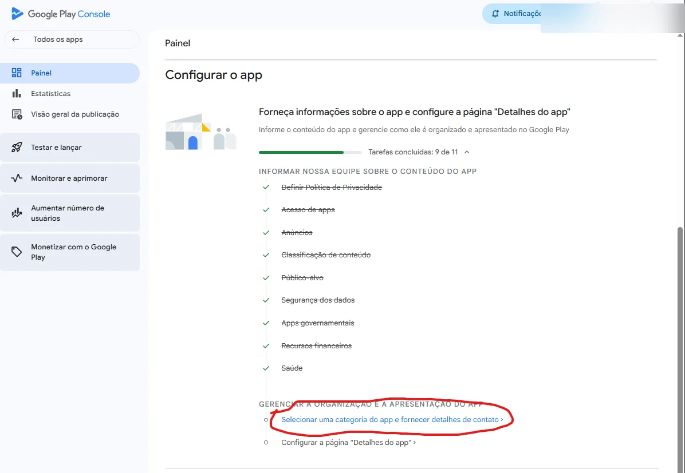
17
Preencha categoria e detalhes de contato do tenant
Todos os campos desta página são específicos por tenant — extraia as informações diretamente do próprio tenant e preencha conforme abaixo:
Campo
Valor
Categoria do app
Sugestão: Educação
Tag
Sugestão: Educação
E-mail
E-mail de contato do tenant
Telefone
Telefone de contato do tenant (opcional)
Website
URL do site do tenant
Clique em Salvar.
Detalhes do app
18
Configure a página "Detalhes do app"
No painel do app, em Gerenciar a organização e a apresentação do app, clique em Configurar a página "Detalhes do app".
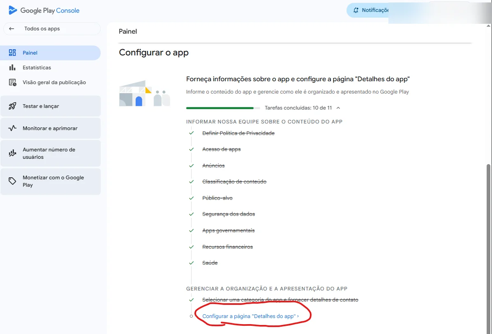
Preencha os campos com as informações do tenant:
Campo
Valor
Nome do app
Nome de exibição do tenant (máx. 30 caracteres)
Descrição resumida
Resumo curto do app (máx. 80 caracteres)
Descrição completa
Descrição detalhada do app do tenant (máx. 4.000 caracteres)
Ícone do app
PNG 512 × 512 px — solicitar ao time de UX/UI
Gráfico de recursos
PNG ou JPEG 1024 × 500 px — solicitar ao time de UX/UI
Capturas de tela (celular)
Mínimo 2, máximo 8 — solicitar ao time de UX/UI
ℹ️
As imagens são preparadas pelo time de UX/UI no Figma. Solicite os arquivos exportados antes de iniciar este passo.
Teste fechado
19
Selecione países e regiões
No painel do app, em Lançar o app → Configurar uma faixa de teste fechada, clique em Selecionar países e regiões.
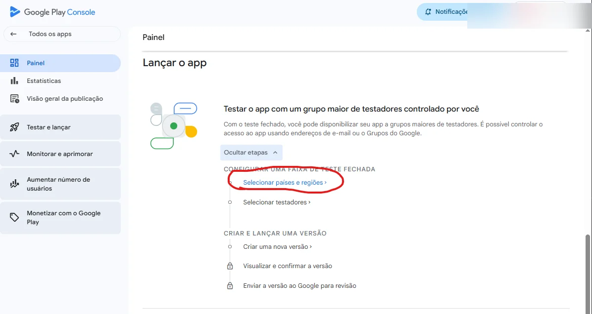
Na página Países / regiões, marque o checkbox do cabeçalho da coluna País / região para selecionar todos os países de uma vez. Em seguida, clique em Salvar.
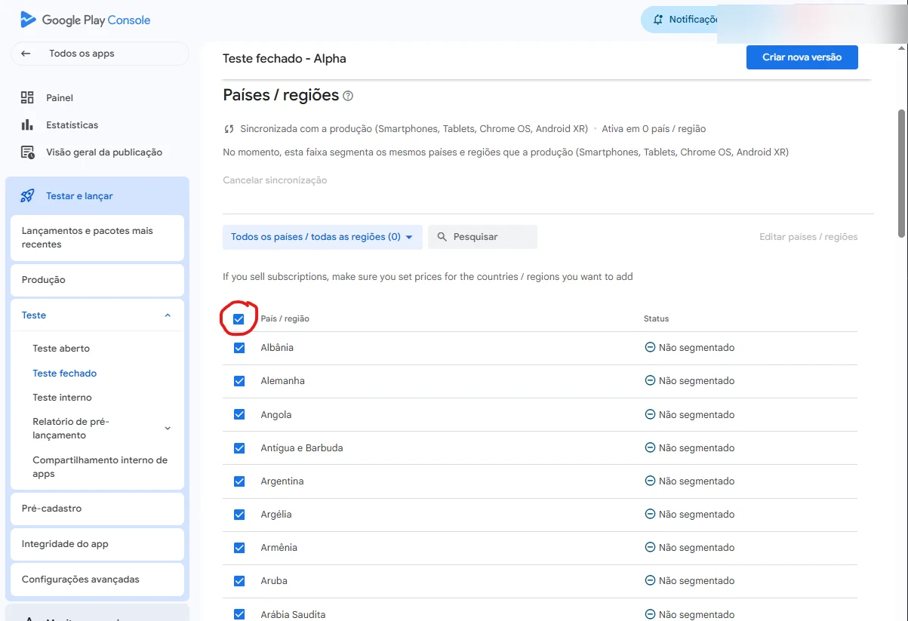
20
Selecione testadores
De volta ao painel, em Lançar o app → Configurar uma faixa de teste fechada, clique em Selecionar testadores.
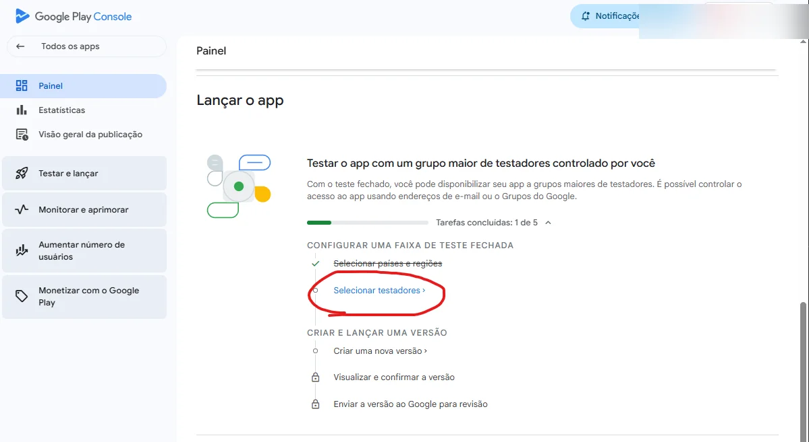
Adicione os endereços de e-mail das contas Google que devem ter acesso ao teste fechado e salve.
Criando versão
21
Crie uma nova versão
No painel do app, em Lançar o app → Criar e lançar uma versão, clique em Criar uma nova versão.
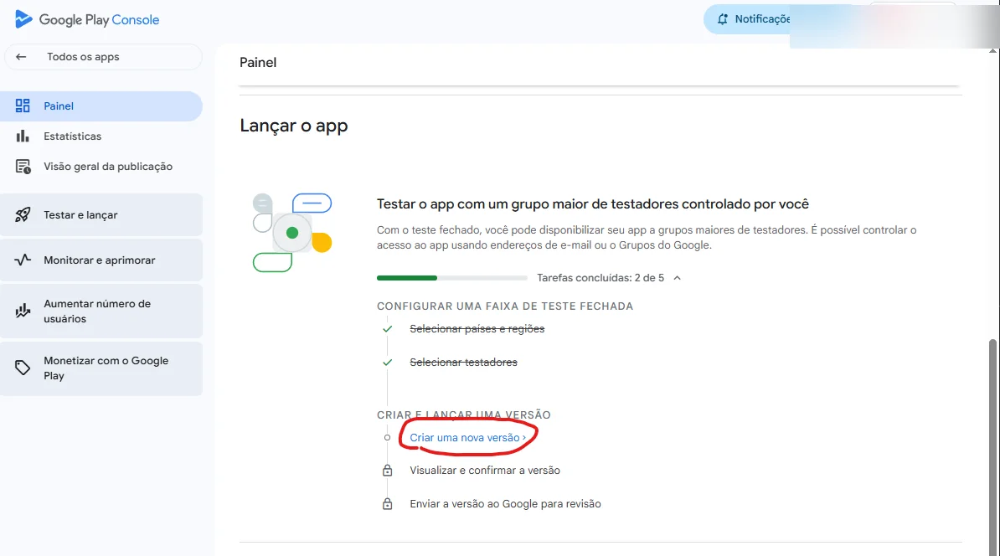
22
Baixe o .aab no EAS
Acesse o painel de builds do projeto no expo.dev, abra o build Android mais recente e clique em Download para baixar o artefato .aab.
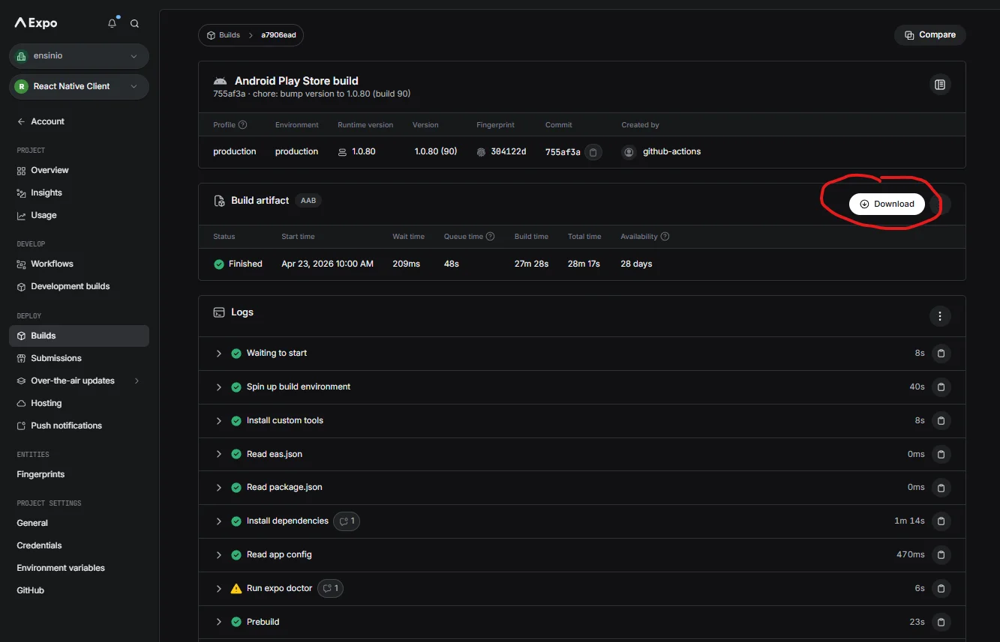
23
Faça upload do .aab e preencha os detalhes da versão
Na página Criar versão de teste fechado, arraste o .aab para a área Pacotes de apps ou clique em Enviar. Aguarde o upload concluir.
Em Detalhes da versão, preencha:
Campo
Valor
Nome da versão
Gerado automaticamente — pode editar (ex: Versão 1.0)
Notas da versão
Descreva o que há na versão dentro das tags de idioma: <pt-BR>Versão 1.0</pt-BR>
Clique em Próximo.
24
Salve e publique a versão
Na página Visualizar e confirmar (Passo 2), revise o resumo da versão, clique em Salvar e publicar e em seguida em Ir para a visão geral.
25
Envie as mudanças para revisão
Na página Visão geral da publicação, confirme todos os dados listados em Mudanças que ainda não foram enviadas para revisão e clique em Enviar para revisão.
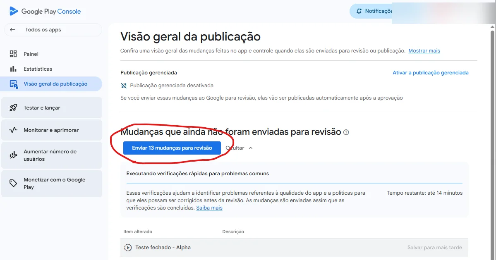
Confirme o envio no modal de confirmação. Após isso, basta aguardar o review do Google — o prazo usual é de algumas horas a alguns dias.
Pós-build
Configuração SNS iOS
Configure o aplicativo de plataforma no Amazon SNS para habilitar push notifications via APNs. Tenha o arquivo .p8 da chave APNs em mãos antes de começar.
Slug do tenant
Digite o slug para preencher automaticamente os bundle IDs desta página.
No campo Key Name, use o padrão SNSNomeDoTenant (ex: SNSMinhaPlataforma). Em seguida, marque o checkbox Apple Push Notifications service (APNs) e clique em Configure.
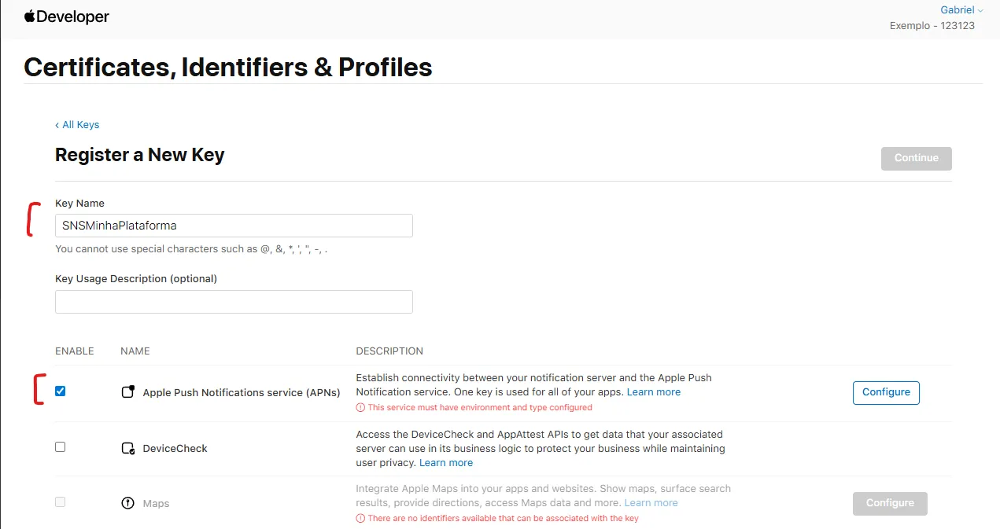
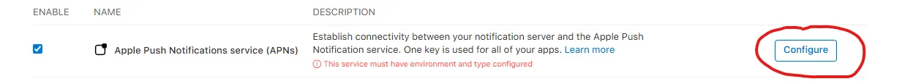
Na tela Configure Key, defina:
Environment: Production
Key Restriction: Team Scoped (All Topics)
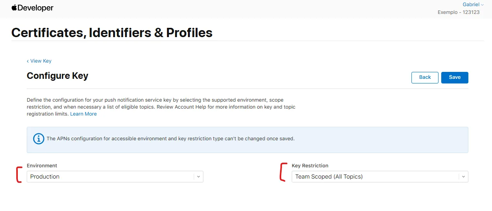
⚠️
O ambiente e o tipo de restrição não podem ser alterados após salvar. Confirme os valores antes de continuar.
Clique em Save para confirmar e depois em Continue na tela anterior.
3
Confirme, baixe a chave e guarde o Key ID
Clique em Continue e depois em Register para finalizar o cadastro da chave.
Na tela Download Your Key, clique em Download para baixar o arquivo .p8 e anote o Key ID exibido na página (ex: ABC123).
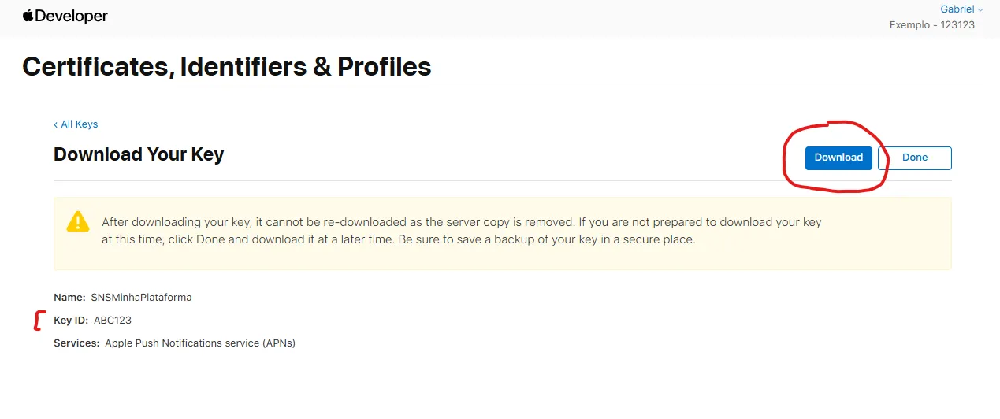
⚠️
O arquivo .p8só pode ser baixado uma vez. Guarde-o em local seguro — ele será necessário para configurar o SNS.
Após a criação, copie o ARN exibido na página do aplicativo de plataforma.
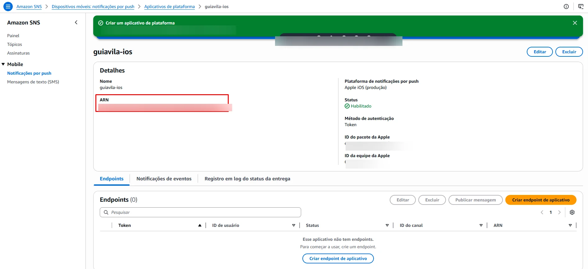
8
Cole o ARN nas configurações do tenant na plataforma
Acesse o GI da plataforma, vá em Detalhes do inquilino → Configurações do App e cole o ARN copiado no campo ARN do endpoint iOS no Amazon SNS. Clique em Atualizar Tenant para salvar.
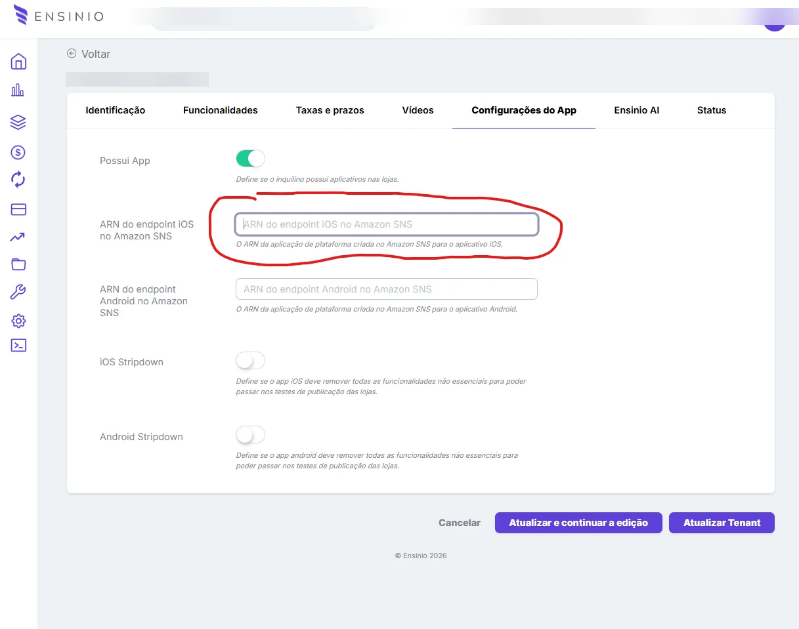
Pós-build
Configuração SNS Android
Configure o aplicativo de plataforma no Amazon SNS para habilitar push notifications via FCM. O bundle ID deve estar registrado no Firebase — veja Configuração Android.
Passo a passo
1
Acesse o Firebase Console
Entre no Firebase Console e selecione o projeto interno de notificações.
2
Abra as configurações do app Android
Na visão geral do projeto, localize o app Android criado nos passos da Configuração Android e clique no ícone de engrenagem ao lado do nome do app.
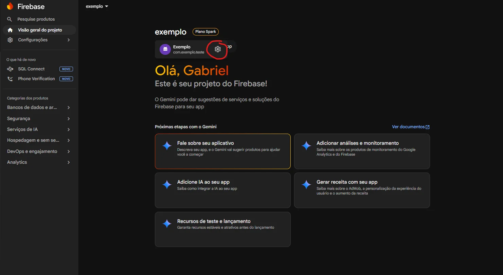
3
Gere a chave privada da conta de serviço
Na página de configurações, clique na aba Contas de serviço e, na seção SDK Admin do Firebase, clique em Gerar nova chave privada. Um arquivo .json será baixado — guarde-o, pois será necessário no próximo passo.
No formulário, configure os campos conforme abaixo:
Campo
Valor
Nome do aplicativo
slug-do-tenant-android
Plataforma de notificações por push
Firebase Cloud Messaging (FCM)
Método de autenticação
Token (recomendado)
Json de serviço
Clique em Escolher arquivo e selecione o .json baixado no passo 3
Deixe Notificações de eventos e Registro em log do status da entrega recolhidos (opcionais) e clique em Criar um aplicativo de plataforma.
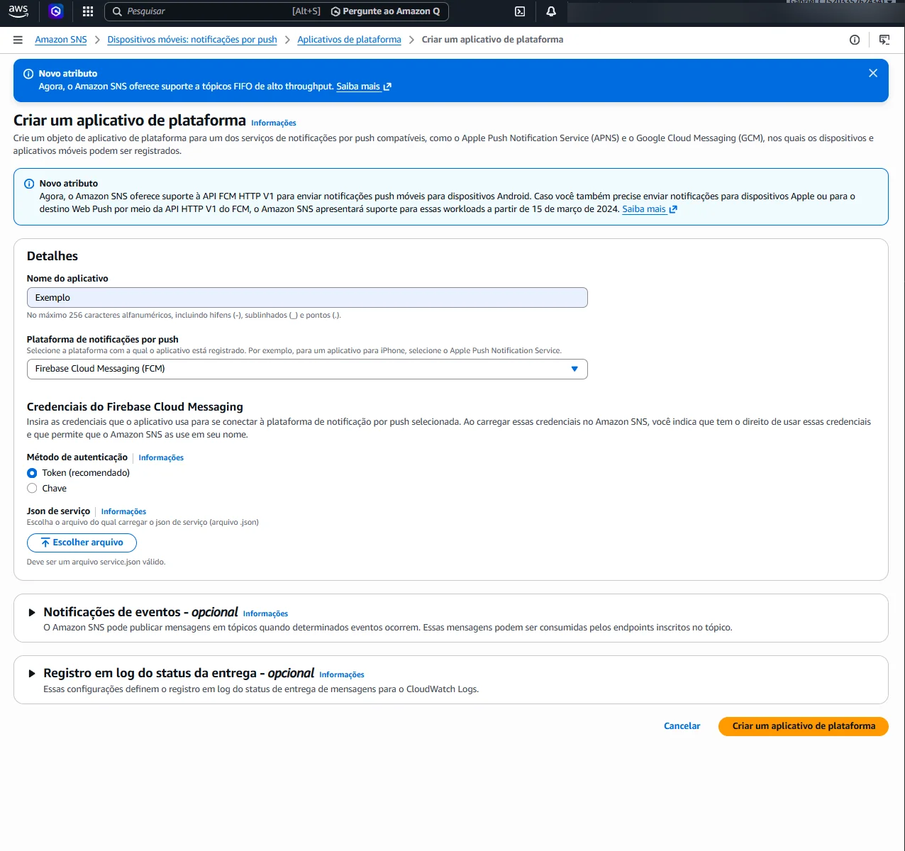
Copiar ARN
6
Copie o ARN gerado
Após a criação, copie o ARN exibido na página do aplicativo de plataforma.
7
Cole o ARN nas configurações do tenant na plataforma
Acesse o GI da plataforma, vá em Detalhes do inquilino → Configurações do App e cole o ARN copiado no campo ARN do endpoint Android no Amazon SNS. Clique em Atualizar Tenant para salvar.
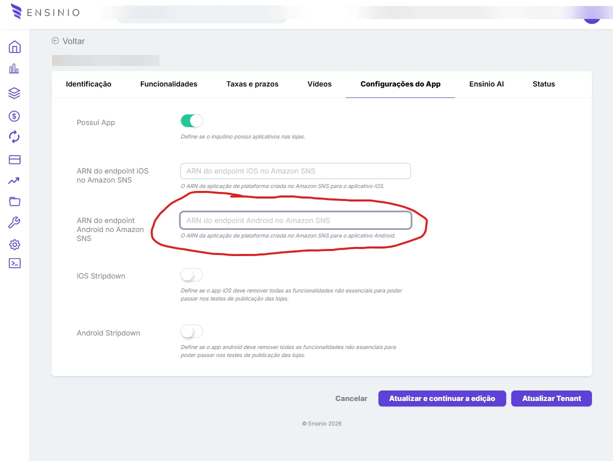
Manutenção
Atualizar iOS
Como gerar novo build iOS e submeter uma atualização para um tenant existente.
⚠️
Tenants mais antigos podem não seguir o padrão atual de bundle ID (com.plataformaexemplo.[slug-do-tenant]). Sempre confirme o bundle ID correto consultando o painel de apps publicados na App Store Connect antes de gerar o build.
Se o app já estiver publicado com um bundle ID diferente do padrão, use a opção App existente abaixo para informar o prefixo correto.
Tipo de app
Slug do tenant
Digite o slug e o nome para preencher automaticamente os comandos desta página.
com.plataformaexemplo.
TENANTNAME=
bundle_id=
ℹ️
Todas as alterações (código, assets, configurações) precisam estar commitadas e no repositório remoto antes de gerar o build — o EAS usa o estado atual do branch.
ℹ️
O workflow Android bumpa runtimeVersion e versionCode automaticamente via scripts/bump-version.js. Para manter iOS e Android na mesma versão, dispare o workflow Android primeiro, faça git pull do commit gerado e só então rode o build iOS.
⚠️
O build iOS é sempre manual — não há workflow automático para iOS.
Perfil no eas.json
Confirme se o tenant tem perfis em eas.json. Os nomes seguem o padrão production-[slug]. Se não existirem, adicione os dois trechos abaixo ("build" e "submit") e commite antes de buildar.
Para apps com bundle ID customizado, inclua também o campo BUNDLE_ID no perfil de build — assim os comandos de build e submit dispensam variáveis de ambiente inline:
Acesse expo.dev → Builds e aguarde o build com status In progress concluir. Ao finalizar, clique em Download na seção Build artifact para baixar o arquivo .aab.
3
Criar nova versão no Google Play
Acesse o Google Play Console, selecione o app do tenant e, no menu lateral, clique em Testar e lançar → Produção. Em seguida, clique em Criar nova versão.
4
Upload e detalhes da versão
Na tela Criar versão de produção, faça o upload do .aab baixado na seção Pacotes de apps — arraste o arquivo ou clique em Enviar. Em seguida, preencha a seção Detalhes da versão:
Campo
Valor
Nome da versão
Preenchido automaticamente com base no .aab — não é necessário alterar
Notas da versão
Descreva o que mudou nesta versão para os usuários, dentro das tags <pt-BR>
5
Enviar para revisão
Clique em Salvar e depois em Revisar versão. Na tela de revisão, clique em Iniciar lançamento para produção para enviar o app para revisão do Google Play.
Referência
Referência
Consulta rápida de secrets, variáveis e checklist completo por tenant.